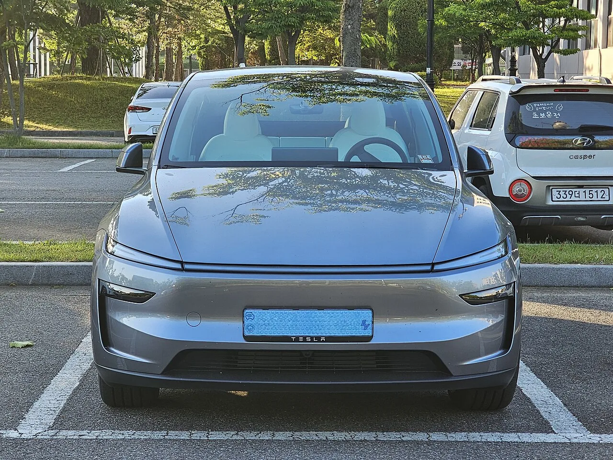
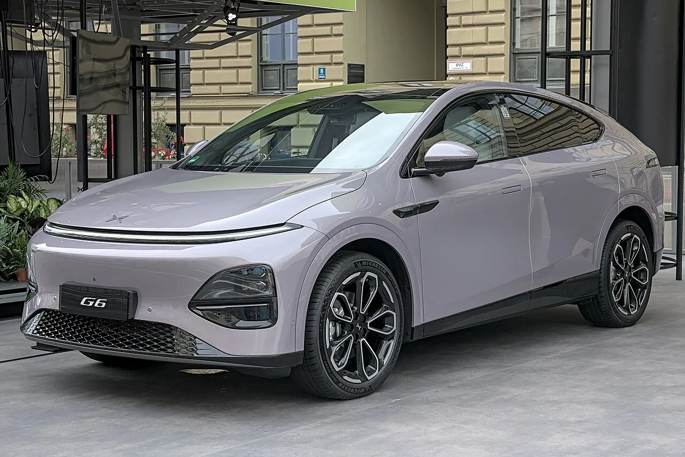

▲ 테슬라 모델Y. 지난달 그랜저를 제치고 국내 신차 판매 1위에 올랐다
국내 테슬라 FSD 대응 차량이 약 4,200대에서 5만 대 이상으로 늘었습니다. 열 배가 넘는 증가입니다.
차를 더 판 결과가 아닙니다. 구형 모델까지 FSD 라이트가 배포되면서 기존 차량이 대응 목록에 들어온 것입니다.
그리고 이 변화는 테슬라만의 이야기로 끝나지 않습니다. 규제가 함께 움직이고 있고, 그 통로 앞에 샤오펑이 서 있습니다.
1. 왜 갑자기 열 배가 됐나
4,200대에서 5만 대는 판매로 설명할 수 없는 증가폭입니다. 기존에 팔린 차가 소프트웨어 업데이트로 대응 목록에 편입된 결과입니다.
핵심은 FSD 라이트입니다. 최신 하드웨어를 요구하던 기존 FSD와 달리, 구형 모델에서도 돌아가도록 기능을 조정한 버전입니다.
그동안 국내에서 FSD 관련 업데이트는 상대적으로 느렸습니다. FSD 라이트가 그 속도를 끌어올린 셈입니다.
숫자가 의미하는 바는 분명합니다. 도로 위에서 주행 보조 소프트웨어를 상시 쓰는 차량이 단기간에 열 배 이상 늘었다는 것입니다.
2. 모델Y가 그랜저를 눌렀다는 사실
배경에는 판매 실적도 있습니다. 테슬라 모델Y가 지난달 그랜저를 제치고 국내 신차 판매 1위에 올랐습니다.
수입 전기차가 국산 준대형 세단을 제친 것은 국내 시장에서 흔한 일이 아닙니다. FSD 대응 차량이 5만 대를 넘겼다는 사실과 이 판매 실적을 함께 놓고 봐야 그림이 맞춰집니다.
즉 기존 차량의 소프트웨어 확대와 신차 판매 증가가 동시에 일어나고 있습니다.

▲ FSD 라이트 배포로 구형 모델까지 대응 목록에 들어왔다
3. 규제가 함께 움직이고 있다 — DCAS
여기서 이야기가 확장됩니다. 국토교통부가 유럽의 DCAS(Driver Control Assistance System) 인증 체계 도입을 검토하고 있습니다.
DCAS는 레벨 2+에 해당하는 주행 보조 시스템을 다루는 유럽 기준입니다. 완전 자율주행(레벨 3 이상)과 단순 차선유지 사이의 영역을 제도적으로 규정합니다.
먼저 분명히 해둘 것이 있습니다. 이는 "검토" 단계이고 도입이 확정된 사안이 아닙니다.
다만 도입될 경우 파급이 작지 않습니다. 유럽에서 이미 DCAS 인증을 통과한 차량은 국내 진입 문턱이 크게 낮아지기 때문입니다.
4. 그 통로 앞에 서 있는 샤오펑
이 대목에서 샤오펑(XPeng)이 등장합니다.
샤오펑은 2027년 국내 전기차 시장 진출을 목표로 하고 있습니다. 중국 내에서 테슬라와 나란히 자율주행 기술 상위권으로 평가받는 업체입니다.
준비는 이미 상당히 진행됐습니다. 2년 넘게 딜러망 확보에 공을 들여왔고, 파트너에게 재고 부담을 최소화하는 조건을 제시하며 접근하고 있습니다. 초기 진입 비용을 딜러에게 떠넘기지 않겠다는 신호입니다.
투입 모델은 아직 확정되지 않았습니다. SUV·세단·밴을 놓고 검토 중인 단계입니다.

▲ 샤오펑 G6. 유럽 인증을 마친 모델은 DCAS 도입 시 국내 진입이 수월해진다
5. 2027년이 분기점으로 꼽히는 이유
업계에서는 2027년을 국내 자율주행 대중화의 분기점으로 봅니다. 세 가지가 같은 시기에 겹치기 때문입니다.
📅 2027년에 겹치는 세 가지 변화
- ①테슬라 FSD 보급 확대 — 이미 5만 대를 넘겼고, 라이트 버전으로 계속 늘어나는 중
- ②DCAS 인증 체계 도입 여부 결정 — 레벨 2+ 기능의 제도적 근거가 마련되는 시점
- ③중국 브랜드의 실제 진입 — 샤오펑을 비롯한 업체들이 목표로 잡은 시기
그 결과 자율주행 기능이 선택 옵션에서 필수 사양으로 넘어갈 것이라는 전망이 나옵니다. 지금까지는 있으면 좋은 기능이었지만, 경쟁 차종이 모두 갖추면 없는 쪽이 불리해집니다.
이미 중국 시장에서는 샤오펑을 비롯한 업체들이 자율주행 기능을 기본 사양으로 밀어붙이고 있습니다. 국내에 들어올 때도 같은 전략을 쓸 가능성이 큽니다.

▲ 샤오펑은 2년 넘게 국내 딜러망을 다져왔다. 진출 목표는 2027년이다
6. 정리 — 확인된 것과 아닌 것
확인된 사실은 두 가지입니다. FSD 대응 차량이 약 4,200대에서 5만 대 이상으로 늘었다는 것, 그리고 모델Y가 지난달 국내 신차 판매 1위에 올랐다는 것입니다.
확정되지 않은 것도 분명히 해두겠습니다. 국토부의 DCAS 도입은 검토 단계이고, 샤오펑의 2027년 진출도 목표일 뿐 확정 일정이 아닙니다. 투입 모델도 정해지지 않았습니다.
그럼에도 방향은 읽힙니다. 소프트웨어 보급이 규제 논의를 앞질러 가고 있고, 규제가 그 뒤를 따라가면서 새로운 진입 통로가 열리는 구조입니다. 그 문이 열릴 때 가장 먼저 들어올 준비를 마친 쪽이 어디인지가 지금의 관전 포인트입니다.